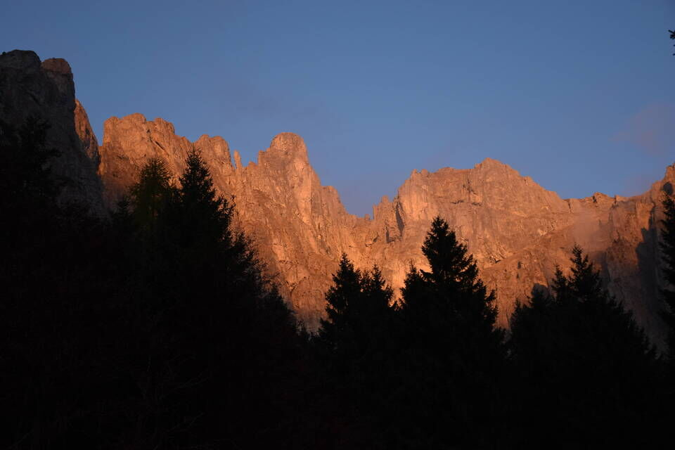
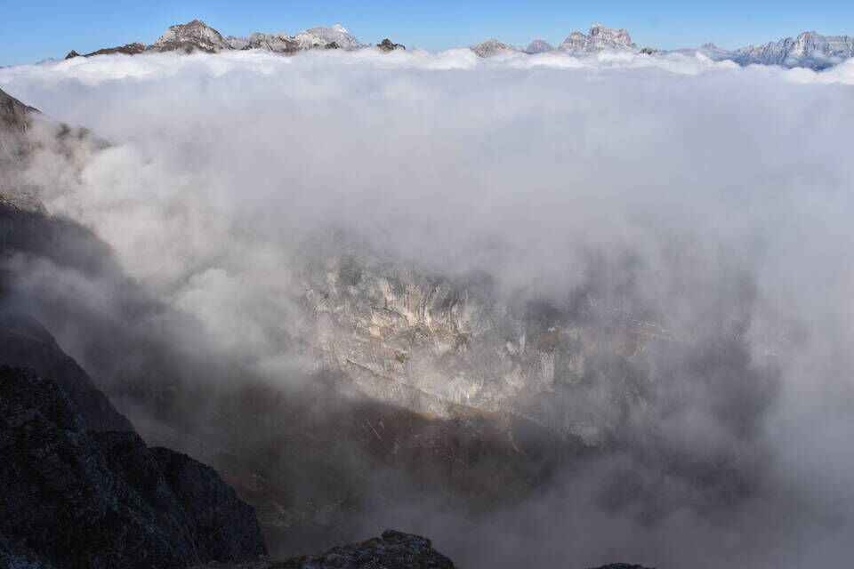
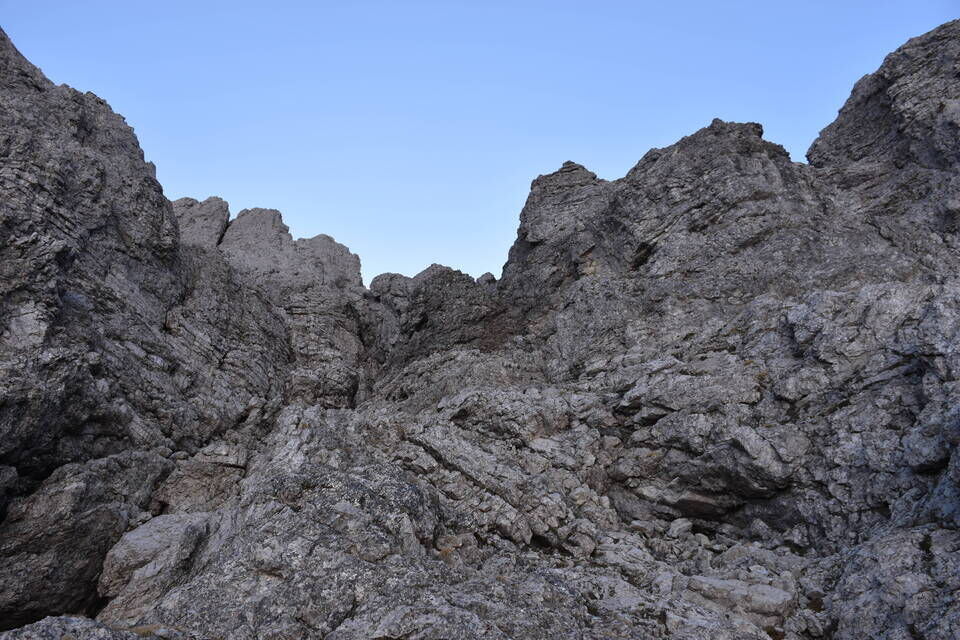
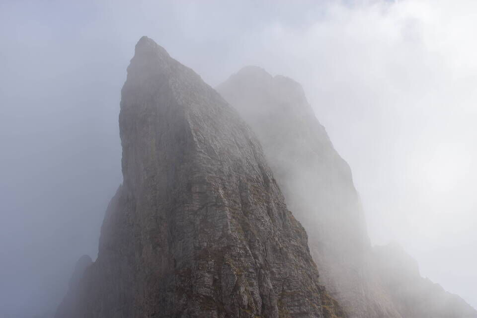

Pelf: la «montagna del Fontanón», così chiamata con riferimento alla cascata che scende sul versante Nord dal bellissimo circo glaciale chiamato Circo del Fontanón. Desideravo tanto visitarlo: il piano, troppo ambizioso, era di percorrere in discesa la grande cengia mediana, entrare nel Fontanón e rientrare a Caiàda tramite la «zéngia dei soldi». Sarà per la prossima volta: col senno di poi sarebbe un peccato «consumare» tutto subito. Le cose bisogna gustarsele con calma. Maledetta fretta!
Leggi questo interessantissimo sito: Appunti sulla zona del M. Pelf.
Altri riferimenti bibliografici sono: Il libro delle cenge di Vittorino Mason, la guida CAI-TCI Schiara di Piero Rossi e Monti di Longarone di Pietro Sommavilla, Giuseppe Nart e Luca Celi.
Partiamo da Caiàda: l'alba infuoca le pareti del Pelf.
In centro s'intuisce la cengia di Pala Bassana, con anche la ripida rampa d'accesso.
La rampa d'accesso alla Pala Bassana, non sembra ma si rivelerà infida e scabrosa. Una volta può bastare.
La rampa-diedro finale, esposta, dove abbiamo fatto due tiri di corda. Ché non si ha mica quattro zampe! Per fortuna ci sono le soste, con due corde da 30m si può scendere in doppia tutta la rampa con quattro calate.
Non bastasse il disagio della salita ci becchiamo pure la nebbia sulla Pala Bassana.
Potevo rimanere a dormire. No! Inizio a vedere un po' di blu sopra le nuvole e corro di felicità verso la cresta.
Vediamo la cima: siamo indecisi se percorrere la cresta Nord-Est oppure imboccare la cengia Nord superiore.
Il Circo del Fontanón ci appare come in un miraggio sotto le nubi.
Nonostante la brina imbocchiamo la facile cengia, che si vede al bordo inferiore dx della foto.
Bellissimo ambiente di camosci.
Il bel canale Nord.
Il mitico Coston de la Nona, via d'accesso da camosci al Pelf.

Visioni surreali verso il Circo del Fontanón.
Il canale in alto sembra chiudersi ma bisogna solo salire con fiducia. Non che non fossi preoccupato!
Con grande sorpresa sbuchiamo direttamente in vetta.
Verso la Schiara.
Il Pelmo dietro le cime del Prampèr.
Verso Nord, con la Talvena e sotto la cima Nerville.
Talvena e Cime di Zità, con dietro la Civetta.
Verso Nord con la val del Grisol.
Verso la valle del Piave. La bella cresta erbosa lì sotto è dove esce la Pala Bassana ed inizia la cengia Nord superiore.
Scendendo per la via normale.
Visione selvagge: lo spigolo Nord del Sass de Mel.
Mondi arcaici.
Da forcella Caneva l'unico punto debole del quasi-inespugnabile Sass de Mel: altro che Burlaton...
In discesa, bella luce sullo Spiz Gallina.
***